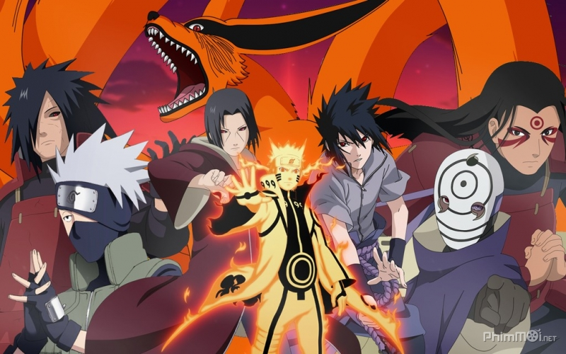
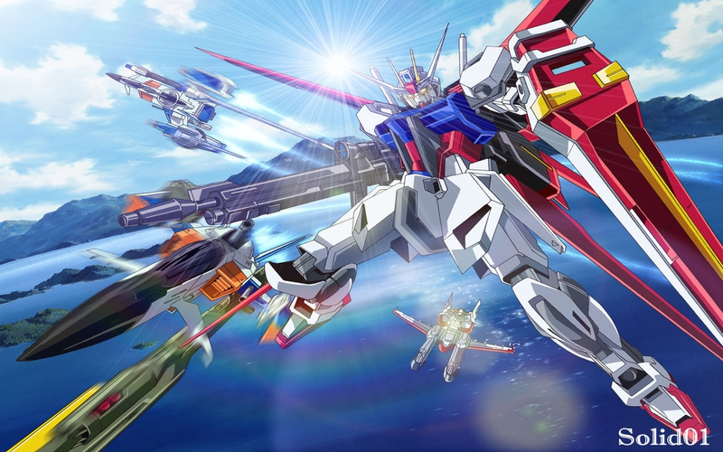

- Bleach
-  Naruto
- One Piece
- Full Metal Alchemist
- Dragon Ball Z
- Pokémon
- Yu-Gi-Oh!
- Death Note
- Code Geass
- One Punch Man
- Hunter X Hunter
-  Mobile Suit Gundam
-
 Attack On Titan
Attack On Titan
-
 InuYasha
InuYasha
{kind=link}
{kind=link}
{kind=link}
{kind=link}
{kind=link}
{kind=link}
{kind=link}
{kind=link}
{kind=link}
{kind=link}
{kind=link}
{kind=link}
BLEACH
Kurosaki Ichigo is unlike any ordinary kid. Why? Because he can see ghosts. Ever since a young age, he's been able to see spirits from the afterlife. Ichigo's life completely changes one day when he and his two sisters are attacked by an evil, hungry and tormented spirit known as a Hollow. Right in the nick of time, Ichigo and his siblings are aided by a Shinigami (Death God) named Kuchiki Rukia, whose responsibility it is to send good spirits (Pluses) to the afterlife known as Soul Society, and to purify Hollows and send them up to Soul Society. But during the fight against the Hollow, Rukia is injured and must transfer her powers to Ichigo. With this newly acquired power, so begins Kurosaki Ichigo's training and duty as a Shinigami to maintain the balance between the world of the living and the world of the dead.